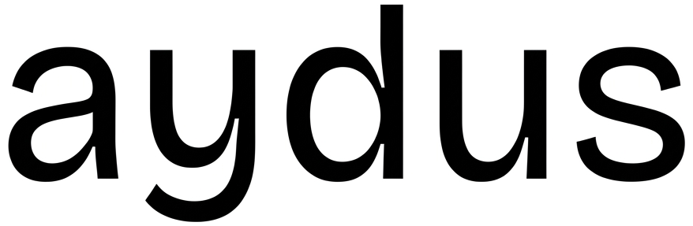

Building is commoditized. AI can write code, design the product, run the operation and soon most of it
will be free. There's one thing that is getting more and more difficult and expensive.
Human
attention.
There are still only 24 hours in a day, and more people are competing for them than ever
before. When
everything else falls to zero, attention is the last scarce resource on earth. That battle is being
fought on social media platforms.
Attention can be engineered.
20 years from now, the ones who know how to drive the attention of 100M
users at will, are going to be the most valuable individuals.
The average valuation of companies we work with is $5B.
For our clients, we are kingmakers who win
attention, mindshare and markets for them.
We are not building a company. We're building an
institution of people who define how attention is won over the next 20 years.